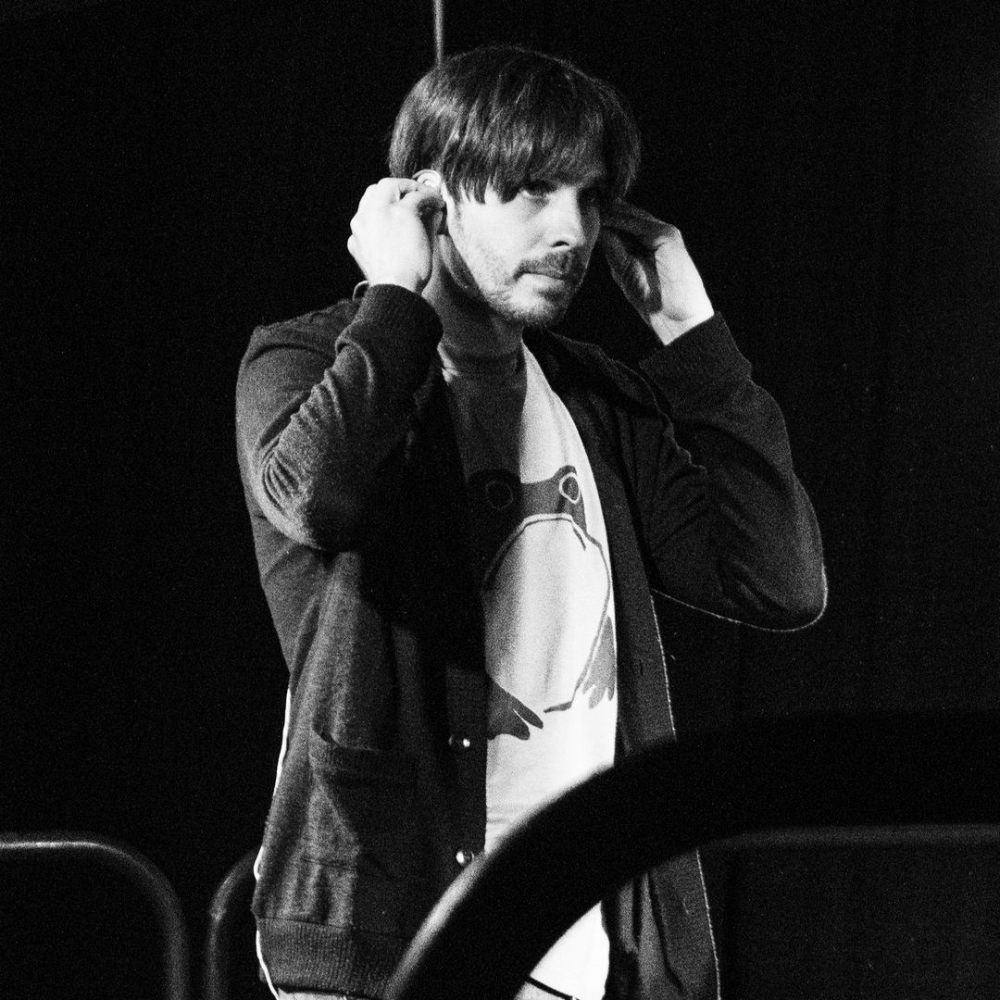
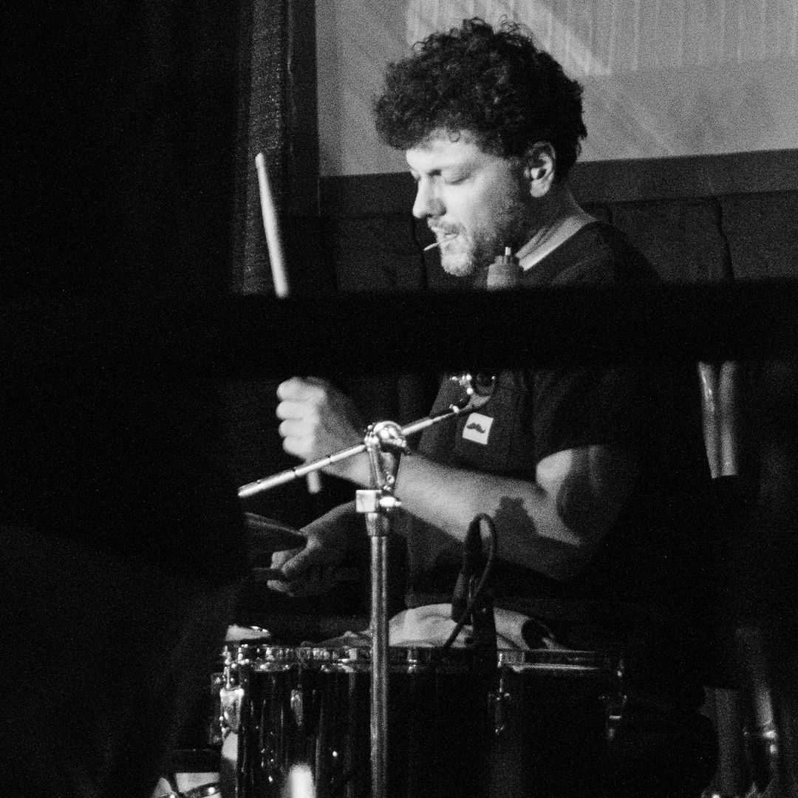
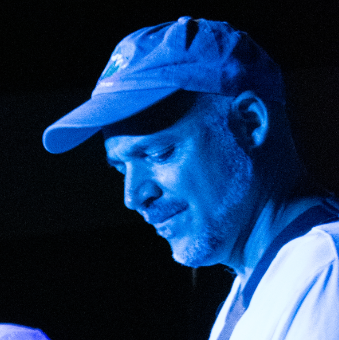
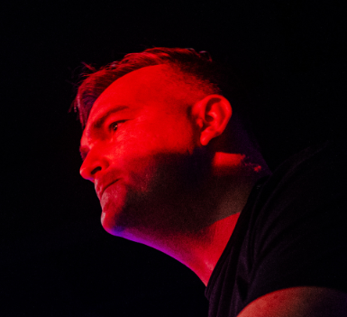
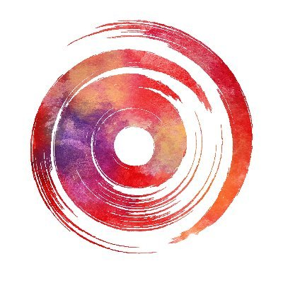

Vinny is the frontman of Red Vox. He is also a streamer on Twitch under the name Vinesauce.
He plays the guitar and occasinally does bass. He founded the band along with Mike.
Vinny has been interested in music most of his life. His facisnation started with Nirvana.
He first started a band with Mike and another person named Phil called Davy's Grey, and
has done solo music under the name Vine.

Mike is currently the drummer of Red Vox. He is also a streamer on Twitch under the name Jabroni_Mike
He founded the band along with Vinny.
Mike likes many artists and bands, like Steely Dan and Billy Joel.
He has done solo music under the name Jabroni Mike.
His only song as of now is the Dino Rap.
Unfortunately, due to health problems, he may have to step down from drumming.

Joe Pecora is the bassist of Red Vox. He is not a streamer.
He also does production on the albums. Joe has been making music for a long time.
He used to have a band called Happy Anarchy, though that broke up long ago.
He was also in the band The Seconds along with Bill, another Red Vox member.
He features more in the later albums.

Bill Gagliardi is the pianist of Red Vox. He is not a streamer.
He was in The Seconds along with Joe and has also released solo music under his name.
He features in the later albums more.

Jerrold is the newest member of Red Vox. He does remixes of songs on his YouTube channel, Innermotion Music.
He was brought on to help with music, but became a part of the band.
He will be replacing Mike on drums if his condition worsens.